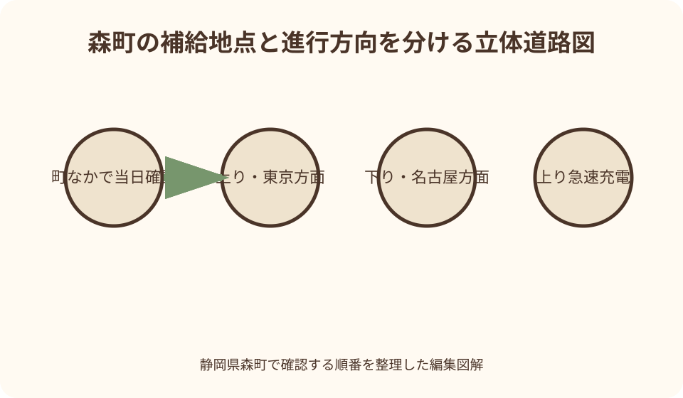
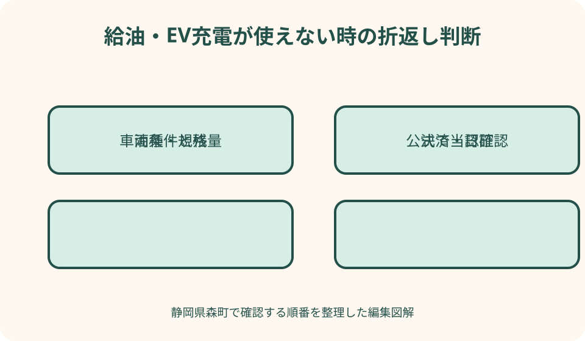

交通・車の補給｜最終確認 2026-08-10
静岡県森町のガソリンスタンド・EV充電確認｜山間部へ入る前の補給手順
森町で車の補給先を探すとき、地図上のピンだけでは不十分です。給油所は当日の営業、休業、油種、決済を、EV充電は設置場所、規格、出力、稼働、認証を別々に確かめます。とくに遠州森町PAは上りと下りで設備が同じではなく、スマートICから高速道路へ入った後にPAを使えない動線もあります。山間部へ入ってから探し直すのではなく、町なかや高速道路へ入る前に残量と代案を決めるための実用手順をまとめます。

編集イラスト補給先より先に車種・残量・方向を決める
補給計画の最初の一行は店名ではなく、車の燃料または電池残量、必要な油種や充電口、これから向かう方向です。森町の町なかで用事を済ませるのか、アクティ森やさらに山側へ進むのかで、戻りやすさが変わります。
ガソリン車ならレギュラー、ハイオク、軽油のどれが必要かを車検証や給油口表示で確認します。レンタカーは記憶に頼らず、貸渡時の案内も見ます。店が開いていても、必要な油種を扱うとは限りません。
EVなら車両の充電口、急速充電への対応、車両側の受入上限、目的地までの消費見込みを確認します。設備側の最大出力が大きくても、車両や電池温度によって同じ速さで入る保証はありません。
上りは東京方面、下りは名古屋方面です。遠州森町PAという同じ名称だけを見て設備を判断せず、今いる道路側と進行方向を地図で合わせます。反対車線の設備は通常の走行のまま移れません。
ガソリンスタンドは地図の表示から一段深く確かめる
地図検索に表示された給油所は候補一覧として使えますが、営業の根拠にはしません。運営会社の店舗検索、店舗自身の告知、電話の順で、その日その時間に利用できるかを確かめます。古い写真や口コミの営業時間は更新差があります。
確認する項目は営業中か、臨時休業がないか、必要な油種があるか、セルフかスタッフ給油かです。携行缶への給油など通常と異なる依頼は法令や店舗運用が関わるため、来店してから求めず事前に店へ相談します。
営業時間内でも在庫、設備点検、災害対応などで販売条件が変わる場合があります。『地図に営業中と出た』を確定情報にせず、山側へ長く進む日ほど電話確認を加えます。つながらなければ利用できる前提を置きません。
店舗名と住所は家族にも共有します。同じ系列名や似た名称があるときは、ナビへ住所を入れ、到着方向と出入口も確認します。残量が少ない状態で行き過ぎ、狭い道で転回する事態を避けるためです。
価格・油種・決済は別の確認項目
燃料価格は変動するため、記事の数字を当日の価格として使えません。価格差を探して遠回りする前に、必要量と目的地までの距離を考えます。残量が少ないときは最安値より、確認できた近い店舗が実用的です。
給油所の案内にガソリンの表示があっても、軽油やハイオク、灯油の扱いまで自動では決まりません。車に必要な油種を一語で伝え、取扱いを確認します。誤給油を防ぐため、同乗者任せにせず運転者も表示を見ます。
現金、クレジットカード、系列カード、電子決済の利用条件は店舗ごとに異なります。スマートフォン決済だけに寄せず、通信障害や端末不調に備えて別の支払い手段も用意します。現金のみ、カードのみと決めつけません。
レシートには店名、日時、油種、量が残ります。山間部へ頻繁に通う家族なら、どこで補給したかを記録すると、次回の残量判断と営業確認の起点になります。ただし前回使えた事実は今回の営業保証ではありません。

EVは規格・出力・認証・稼働を分けて見る
EV充電器のピンを見つけたら、急速か普通か、車両のコネクタと合うかを確認します。『充電器あり』という表示だけでは、必要な時間内に必要量を補える設備か判断できません。
設備の出力表示は理論上の設備能力であり、常にその出力で充電される意味ではありません。車両側の受入能力、電池残量、外気温、他口との電力配分などで実際の速度が変わる可能性があります。
認証には充電会員カード、クレジットカード、アプリなどが使われることがあります。利用する充電網の公式案内を読み、アカウント登録、支払手段、ログインを自宅の通信が安定した場所で済ませます。現地での現金払いを想定しません。
設置情報と稼働情報も別です。設備が登録されていても、点検、故障、更新工事、通信不調で停止する場合があります。出発直前に運営者の障害・休止情報を見て、現地の表示にも従います。
遠州森町PA上りで確定できる範囲
NEXCO中日本の施設案内とEV急速充電設備一覧では、遠州森町PA上りに急速充電器2口が掲載されています。上りは東京方面です。口数は待ち時間ゼロを意味せず、先客、充電終了後の移動、故障で利用可能数が変わります。
利用前にはNEXCO中日本の施設ページから最新の設備表示を見て、充電網運営者の休止情報も確認します。ページを保存した日ではなく、走行する当日に読み直します。画面の更新日時が分かる場合はそれも見ます。
PA到着時は、駐車区画から充電区画へ逆走せず、路面表示と案内標識に従います。充電区画を休憩用駐車として使わず、終了後は速やかに一般区画へ移動します。待っている車がある場合も施設の利用案内を優先します。
上りPAの施設案内に急速充電器が載ることと、ガソリンを給油できることは別です。現行のPA施設ページやNEXCO中日本の給油所案内で給油設備を確認できないときは、ここで燃料を買える前提を置かず、一般道側で先に補給します。
遠州森町PA下りは上りと同じ設備ではない
遠州森町PA下りは名古屋方面です。NEXCO中日本の現行EV急速充電設備一覧で上りの掲載を見ても、下りにも同じ口数があるとは読めません。設備の有無は下りの施設ページと最新一覧で個別に確認します。
高速道路上で下りから上りへ充電のためだけに移ることはできません。次のインターチェンジで降りて戻る案は、料金、時間、残量を余計に使います。下り走行を始める前に、進行方向上の確認済み充電先を複数持ちます。
ガソリン車も同じです。下りPAの飲食や物販が営業していることと、給油設備の存在は結びつきません。NEXCO中日本の給油所案内に掲載される進行方向上の施設か、一般道の運営者公式案内へ戻って確認します。
同乗者が検索するときは『遠州森町PA』だけでなく『下り・名古屋方面』まで読み上げてもらいます。検索結果の写真が反対側の施設でないか、公式ページの方向表記と施設番号を合わせます。

スマートIC流入後にPAで補給する計画は立てない
森町公式とNEXCO中日本の案内では、遠州森町スマートICはPAに接続しますが、ICから高速道路へ流入した後はPAを利用できない動線です。入口を通ってから上りPAの充電器へ寄る、という順序では考えません。
一般道からスマートICへ向かう前に、給油または必要量の充電を終えます。ナビがPAとICを同じ地点のように表示しても、車の走行経路は分離されています。料金所付近で停止して検索し直さず、安全な場所で確認します。
スマートICはETC利用や車長、一旦停止など固有の条件があります。補給先を探す焦りでゲートへ誤進入しないよう、入口へ向かう判断と補給完了の確認を別にします。利用条件は森町公式の最新案内へ戻ります。
高速道路側のPAを利用した車がスマートICから町へ出る動線と、町からICへ入った車がPAへ寄る動線は同じではありません。矢印の向きを一つずつ追うことが、名称だけで判断するより確実です。
ぷらっとパークを充電の抜け道にしない
ぷらっとパークは一般道側からPAの商業施設などを利用する仕組みです。しかし、一般道側駐車場があることだけで、高速道路側の充電区画へ一般車が進入できるとは判断できません。
利用できる施設、入口、利用時間、駐車条件はPAごとの公式案内で確認します。現地の業務用門、遮断機、歩行者通路を車で越えず、一般道車両用の表示に従います。
外からPAの建物へ歩いて入れる場合でも、充電器が高速道路側の車両区画にあれば自車を接続できません。EVの一般道利用可否は、充電設備運営者または施設へ事前に確認し、回答が曖昧なら候補から外します。
ぷらっとパークは食事や休憩の候補として有用でも、補給設備を保証する制度ではありません。給油、充電、休憩を一つの場所へまとめず、それぞれの目的に対して利用条件を確かめます。
山間部へ入る前に往復分と予備を考える
アクティ森、キャンプ場、太田川ダム周辺、三倉方面などへ向かう日は、町なかを離れる前に残量を見ます。山道では勾配、空調、低温、渋滞、迂回で消費が増えるため、ナビの片道距離だけでぎりぎりの計画を立てません。
目的地に充電器や給油所が表示されても、宿泊者限定、施設利用者限定、営業時間内限定、予約制の場合があります。目的地の公式案内または運営者へ、外来利用、車種対応、受付、決済を確かめます。
往路で残量警告が出てから山奥の候補を探すと、通信が弱い場所や転回しにくい道路へ入るおそれがあります。町なかで『この残量を下回ったら進まない』という折返し条件を家族と決めます。
補給先を一つだけ登録せず、第一候補、町なかへ戻る第二候補、訪問を短縮する判断を用意します。第二候補までの消費量を含めておかないと、代案が実際には使えません。
道路・天候・災害情報も補給計画の一部
給油所や充電器が稼働していても、そこへ至る道路が通れなければ利用できません。大雨、倒木、工事、林道の通行止めは森町公式の防災情報や道路情報から確認し、現地の規制表示を優先します。
災害時には給油量の制限、停電、通信障害、充電設備停止が起こり得ます。NEXCO中日本も給油所利用では早めの給油と販売制限の可能性を案内しています。通常時の予定を非常時へそのまま当てはめません。
警報や避難情報が出ているとき、補給できるかを確かめるためだけに移動範囲を広げません。安全な場所で自治体、道路管理者、気象情報を確認し、観光や山間部訪問を中止する判断を先にします。
停電時は店舗の照明が点いていても、給油機、決済端末、充電器が動くとは限りません。電話がつながらない場合も営業を推定せず、自宅や宿泊地など安全を確保できる場所に留まります。
混雑と充電待ちは時間ではなく退避条件で管理する
休日や催しの日はPAや町内道路が混み、給油や充電の待ち時間も読みにくくなります。予想到着時刻だけでなく、待ち列が何台なら別候補へ移るか、残量がどこまでなら移動できるかを決めます。
EVは充電中の車が見えても、終了予定時刻を外から正確に判断できません。車内表示をのぞいたり、無断でコネクタへ触れたりせず、公式の利用ルールに従います。
待ち時間を休憩や食事に充てる場合も、充電終了後に車を動かす必要があります。同乗者と離れるなら連絡手段を持ち、運転者が終了通知を確認できる状態にします。
次の候補へ向かうと決めたら、現在地からの距離、道路方向、必要な残量を再計算します。焦って高速道路を降りたり入り直したりせず、進行方向にある確認済み設備を選びます。
家族へ残す補給メモ
森町の実家や山林、農地へ家族が別々の車で通うなら、補給先メモを作ります。候補の正式名、住所、電話、公式URL、必要油種または充電規格、確認日を書きます。
メモには『営業している』ではなく『出発当日に再確認』と記します。充電器なら上り・下り・一般道側のどこにあるか、認証方法、別候補までの方向も残します。
古いメモを更新する担当も決めます。閉店、運営者変更、充電器更新が分かったら、旧情報を消すだけでなく更新日を付けます。家族の端末に古い画面保存が残らないよう共有します。
土地の管理に行く車には、地番だけでなく現地住所、進入路、道路規制の確認先も載せます。補給不足が起きたときに、知らない山道を近道として選ばないための情報です。
良い点
森町には新東名と遠州森町スマートICがあり、高速道路から町内へ向かう動線を組み立てられます。上りPAには公式一覧で確認できる急速充電器があり、東京方面走行時の候補になります。
NEXCO中日本はPA施設、給油所、急速充電設備、スマートICを別ページで案内しています。設備を一括で思い込まず、目的ごとに最新情報へ戻れる点は大きな利点です。
森町公式には観光、防災、道路規制、スマートICの案内があります。補給だけでなく目的地と道の状態を同じ出発前確認にまとめると、山側へ入ってからの迷いを減らせます。
利点が成り立つ条件は、当日に公式情報を読み、方向と利用条件を照合することです。過去に使えた、知人が使ったという情報だけでは、営業や稼働を確定できません。
注文したい点
検索サービスには営業時間、価格、充電出力、故障情報の更新差があります。町内候補を一覧で見つけても、最終確認先が運営者公式や電話であることを、利用者自身が意識する必要があります。
遠州森町PAは上下線で同じ名前のため、設備も同じだと誤認しやすい場所です。施設案内では方向表記をさらに目立たせ、スマートIC流入後にPAを使えない動線も補給設備の近くで確認できると親切です。
EV設備は設置口数だけでなく、一般道からの利用可否、規格、出力、認証、休止情報へ一続きで進める表示が望まれます。利用者側も一画面の地図だけで結論を出さず、情報源をまたいで確認します。
給油所や充電器の少なさを不安だけで語るのではなく、町なかでの早めの補給、確認済み第二候補、訪問短縮をセットで示すべきです。使えない可能性を認めた計画の方が現実的です。
代案・結論
結論は、山間部やスマートICへ向かう前に補給を終えることです。出発当日に車の条件、第一候補の営業・稼働、決済、第二候補、道路情報の五点を確認します。
給油所の営業を確認できなければ、確認できた町外または出発地近くの店舗で先に補給します。安い場所を探して残量を減らすより、目的地を遅らせるか短縮します。
EV充電器が休止または混雑なら、残量に余裕がある段階で進行方向上の確認済み設備へ変更します。余裕がなければ観光や用事を続けず、安全に戻れる場所へ移ります。知らない私有施設のコンセント利用を頼みに行きません。
今日できる行動は、運営者公式URLをブックマークし、車の必要油種または充電規格を家族メモへ書くことです。次に上り・下りとスマートICの矢印を紙へ描けば、現地での検索回数を減らせます。
大石の視点
私は、森町の物件や実家を見に行く車の補給計画は、移動の付随事項ではなく現地確認の一部だと考えます。残量不足があると、道路、境界、建物、農地を見る時間が削られ、焦った判断につながるからです。
売却を決めていない実家でも、家族が通う道、補給候補、通行止めの確認先を実家カルテへ残す価値があります。山林や農地がある場合は、どこまで通常車で入り、どこで引き返すかも現地の安全な範囲で記録します。
不動産の価格より先に、接道、進入口、境界標、地目、登記名義と一緒に、移動の現実を整理します。給油や充電の不便さを誇張せず、確認に必要な時間と代案を購入希望者や家族へ正直に共有します。
小さな不動産業者として勧めたいのは、設備が『ある』という一語を、いつ、どちら向きから、どの車で、何を使って利用できるかへ分解することです。その記録が、まだ売らない家にも次の訪問者にも役立ちます。
出発前チェックを一枚にまとめる
一枚目には車種、油種または充電規格、出発時残量、目的地、往復距離を書きます。二枚目ではなく同じ紙に第一候補と第二候補を並べ、家族全員が見られるようにします。
第一候補には公式URL、電話、方向、当日確認時刻、決済を記入します。PAなら上りか下りか、スマートIC流入の前か後かを矢印で示します。
第二候補には、第一候補からではなく現在地から安全に届く残量条件を書きます。道路規制や警報がある場合は第二候補へ進まず、移動中止へ分岐させます。
森町での補給は、店や充電器の数を暗記する課題ではありません。公式情報を当日に照合し、方向を間違えず、使えない時に早く戻るための判断です。
公式情報・確認先
掲載内容は次の一次情報を基礎に整理しました。営業、料金、催し、交通は変わるため、出発前または手続き前にリンク先で最新情報を確認してください。
- 観光（静岡県森町、2026-08-10確認）
- 防災情報（静岡県森町、2026-08-10確認）
- 町内の林道通行規制情報（静岡県森町、2026-08-10確認）
- 新東名 遠州森町スマートIC（静岡県森町、2026-08-10確認）
- 施設・サービス案内 遠州森町PA上り（NEXCO中日本、2026-08-10確認）
- 施設・サービス案内 遠州森町PA下り（NEXCO中日本、2026-08-10確認）
- EV急速充電スタンド（NEXCO中日本、2026-08-10確認）
- サービスエリア・パーキングエリアのガスステーション（NEXCO中日本、2026-08-10確認）
- スマートIC（NEXCO中日本、2026-08-10確認）
- e-Mobility Power（株式会社e-Mobility Power、2026-08-10確認）